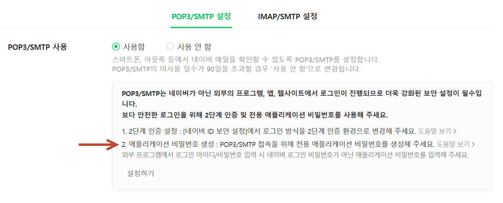
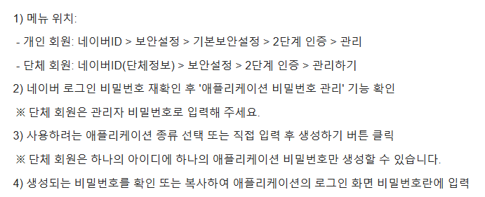

Python 이메일 자동화를 위해 네이버 계정의 SMTP 발송 기능을 활성화하는 방법을 안내합니다.
네이버 메일 웹사이트에서 환경설정 → POP3/IMAP 설정 메뉴를 열고 SMTP 사용함을 선택한 뒤 저장합니다. 이 설정이 활성화되어야 Python에서 네이버 계정으로 메일을 발송할 수 있습니다.

POP3/SMTP 사용함으로 설정한 후 저장 버튼을 클릭합니다. 외부 메일 클라이언트나 Python 스크립트에서 이 계정으로 연결할 수 있는지 확인하는 화면입니다.

smtplib.SMTP("smtp.naver.com", 587)로
연결하면 정상적으로 메일을 발송할 수 있습니다.